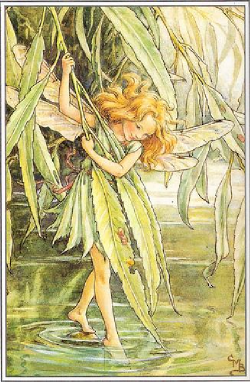

Fairy Willow Milly Mary
by Ben Francis 2012
Fairy Willow Milly Mary was a happy soul,
with eyes as blue as forget-me-nots and hair that shone like gold.
She liked to play in flower beds and chase the butterflies,
on lazy summer afternoons with cloudless clear blue skies.
One morning as she sat upon a toadstool red and white,
she heard a gentle sobbing sound and saw an awful sight.
For underneath an apple tree there was a little girl,
with tears running down her face and twigs stuck in her curls.
Fairy Willow Milly Mary fluttered to her side,
and as she whispered in her ear her eyes did open wide.
"Please don't cry o' human child, it makes me very sad,
if you could smile and dry your eyes I would be very glad."
The little girl she sat up straight, eyes darting all around,
looking for the little voice that made this little sound.
Willow fluttered through the air and landed on her hand,
the little girl just sat and stared, she could not understand.
"Please tell me what has made you cry, and get in such a state,
is there something I can do, or is it far too late?"
Although the girl thought it odd to speak in such a way,
to a person perched upon her hand, she thought it seemed okay...
"The other girls were teasing me and pushed me in a bush."
the little girl said sheepishly and then began to blush.
"Now they will not play with me and have left me all alone,
that is why I'm sitting here, crying on my own."
"What a horrid thing to do, I'm not surprised you're sad!
If I was pushed into a bush, I would be very mad.
But don't you see, you're not alone, for everywhere you look,
there are fairies hidden in the garden, in every cranny and nook."
With those words she reached into a pouch hung by her side,
and blew some sparkling fairy dust into the girl's teary eyes.
It made her sneeze and rub her face, but when she looked again,
she couldn't quite believe her eyes at what she saw just then.
For everywhere that she looked, little people danced,
but seemed to sort of disappear the moment that she glanced.
They had pretty wings and plaited hair and held long daisy chains.
They laughed and sang and danced around as they played their little games.
"So now you know that when you're sad, you never are alone,
for fairies always can be found wherever flowers grow."
With this thought the little girl smiled a happy smile,
and sat beneath the apple tree, just watching for a while.
Dedicated to Willow on her 1st birthday.
Illustration Copyright Cicely Mary Barker c. 1940

This work is licensed under a Creative Commons Attribution 2.0 License.